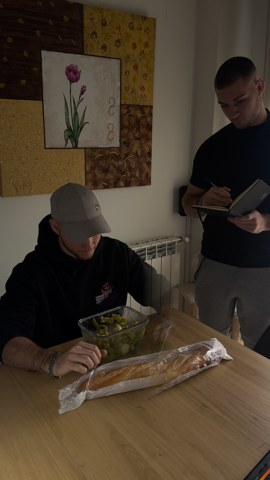
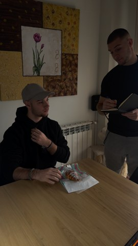
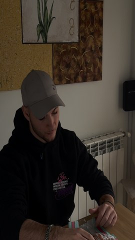
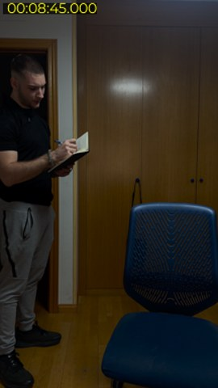
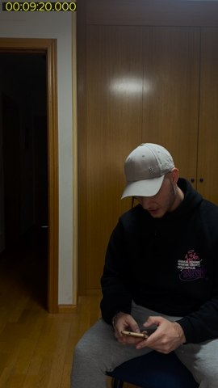
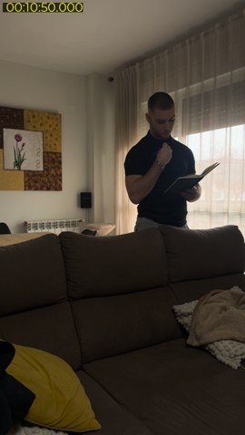
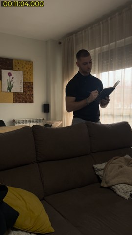
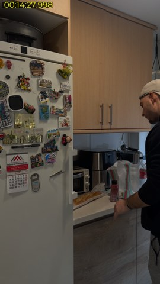

Tu plan. Cada línea del corte está a la derecha. La casilla de la izquierda es tuya: escribe qué se ve en pantalla. 16.1 s · 12 líneas.
¿Lunes?

Nada de pan.

¿Martes?
Nada de chocolate.

¿Cómo me voy a poner?

¿Miércoles?
Nada de salir a cenar afuera con amigos.

Les digo que no.

¿Jueves?

Manzana para cenar.
Muy bien.

¿Pero qué haces?